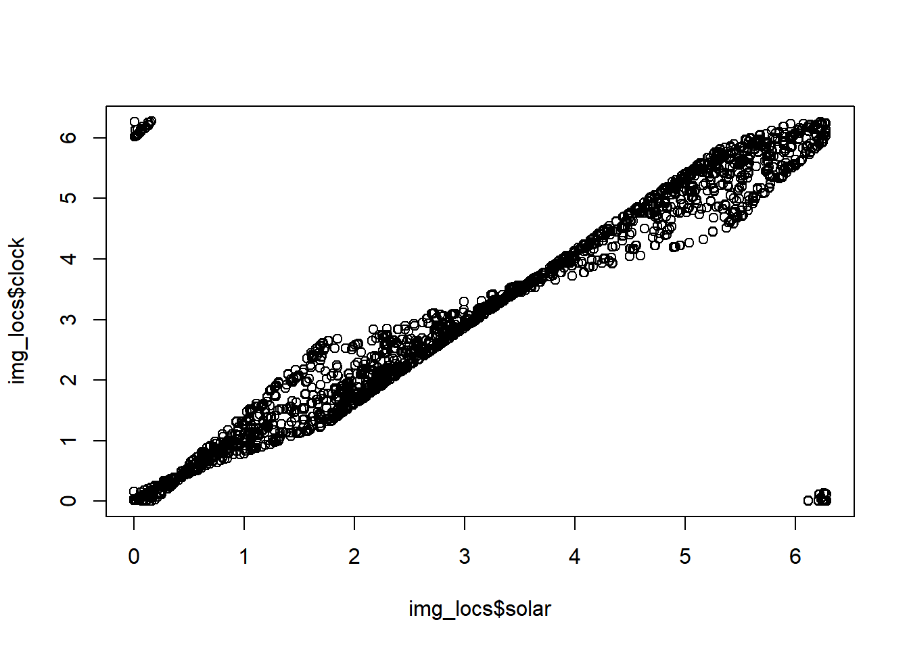
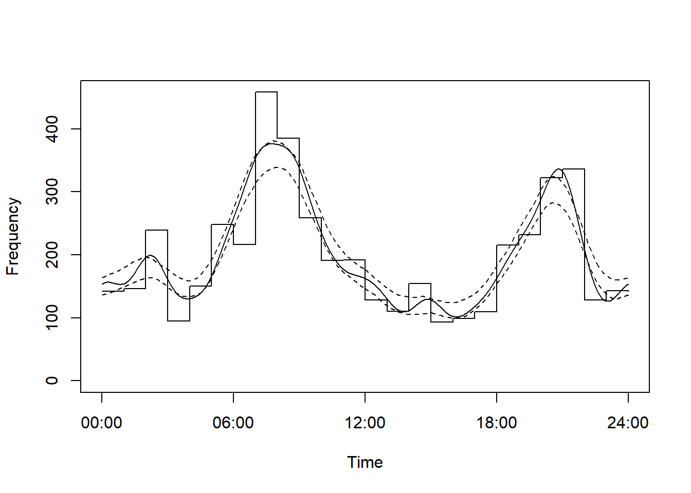
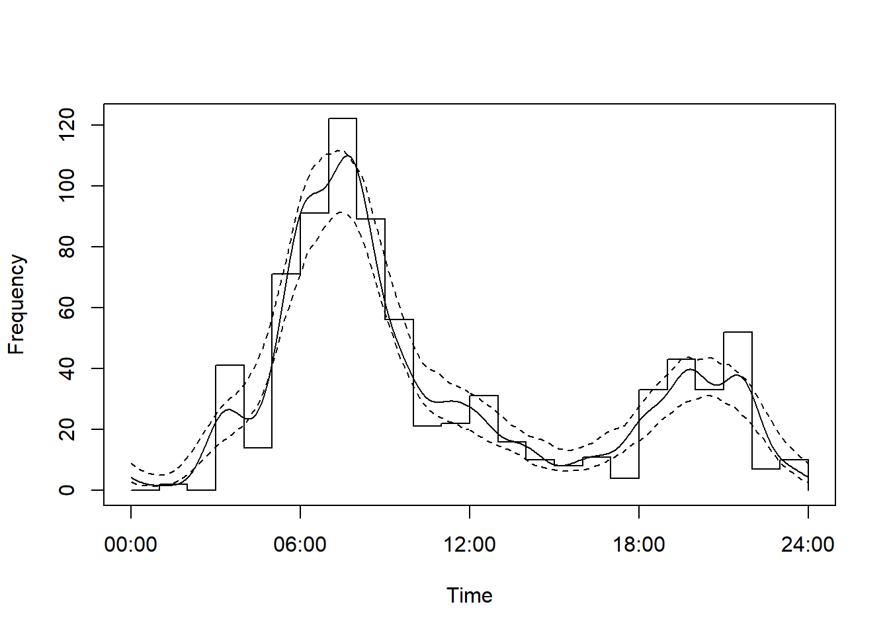
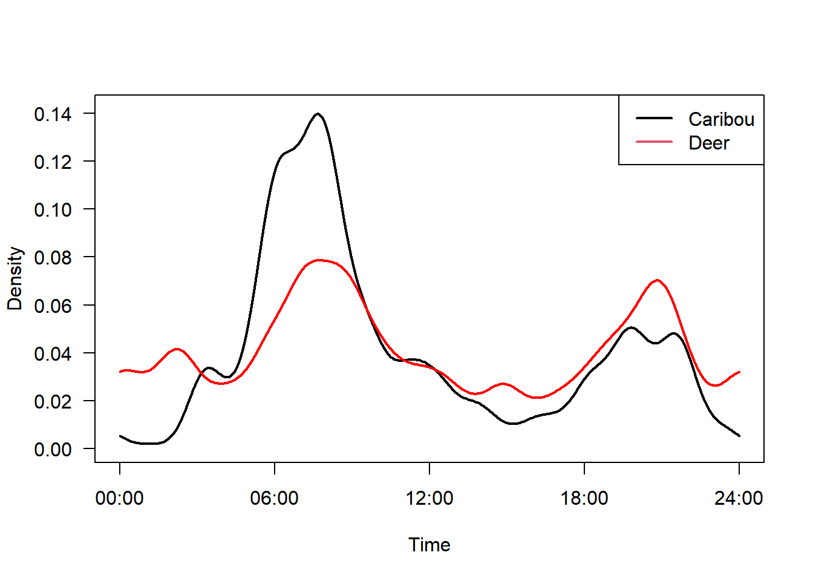
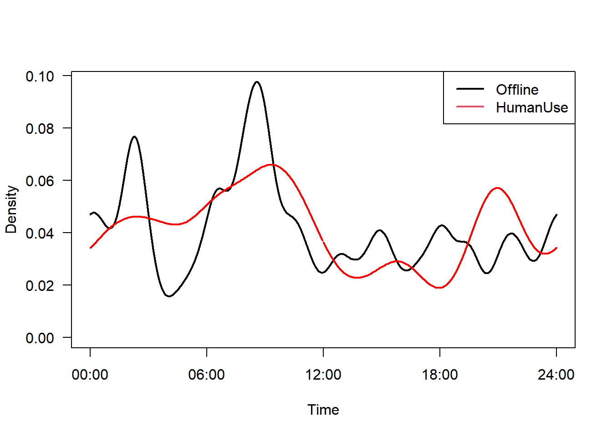
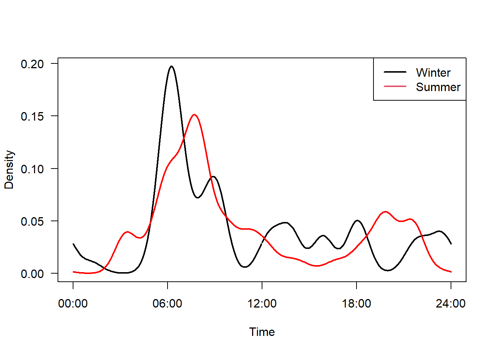

Chapter 12 Activity
Given that camera traps operate 24 hours a day, 7 days a week, and can record animal motion down to second-level precision, they represent a powerful tool to explore and contrast the activity patterns of the species they detect! Such analyses can give insight into competition, predation and coexistence. Characterizing the “activity level” - the proportion of the day which animals are active - is also increasingly important for new estimators of animal density (see the density chapter for more info). Consequently, understanding how to derive and use activity data is very important for people using camera traps.
Two key packages
overlaphttps://cran.r-project.org/web/packages/overlap/index.htmlactivityhttps://cran.r-project.org/web/packages/activity/index.html
They each use the timestamps in camera trap detetions to derive activity indices which can be compared between different strata of interest (e.g. species, treatments etc.).
Here we will use the activity package.
12.1 Independent detections or raw data?
A recent paper has highlighted that we need to carefully consider our data source for activity analyses:
Whilst we typically use “independent data” for most of our camera trap analysis, doing so may throw away useful data on activity. Both in terms of the number of data points (power) but also the activity patterns they generate. Peral et.al show that 70% of papers published to date use independent data to derive their indices. They actually state:“We conclude that the application of time-to-independence data filters in camera trap-based estimates of activity patterns is not valid and should not be used.”
So we will use the raw data to derive our indices!
Load your packages
12.2 Data formatting
First, lets import the processed raw data file.
# Import the data
img <- read.csv("data/processed_data/AlgarRestorationProject_raw_detections.csv", header=T)Which looks like this:
| project_id | deployment_id | image_id | filename | location | is_blank | identified_by | wi_taxon_id | class | order | family | genus | species | uncertainty | timestamp | number_of_objects | age | sex | animal_recognizable | individual_id | individual_animal_notes | behavior | highlighted | markings | cv_confidence | license | placename | group_size | temperature | sp | common_name | animal_count | event_id | event_duration | event_groupsize | event_observations |
|---|---|---|---|---|---|---|---|---|---|---|---|---|---|---|---|---|---|---|---|---|---|---|---|---|---|---|---|---|---|---|---|---|---|---|---|
| AlgarRestorationProject | ALG027_2018-04-11 | Algar27__2018-04-13__13-51-01.JPG | Algar27__2018-04-13__13-51-01.JPG | NA | 0 | ERT | NA | Mammalia | Carnivora | Felidae | Lynx | canadensis | NA | 2018-04-13 13:51:01 | 1 | Adult | NA | NA | NA | NA | NA | NA | NA | NA | ALG027 | 1 | NA | Lynx.canadensis | canada lynx | 1 | E000001 | 8 | 1 | 6 | |
| AlgarRestorationProject | ALG027_2018-04-11 | Algar27__2018-04-13__13-51-02.JPG | Algar27__2018-04-13__13-51-02.JPG | NA | 0 | ERT | NA | Mammalia | Carnivora | Felidae | Lynx | canadensis | NA | 2018-04-13 13:51:02 | 1 | Adult | NA | NA | NA | NA | NA | NA | NA | NA | ALG027 | 1 | NA | Lynx.canadensis | canada lynx | 1 | E000001 | 8 | 1 | 6 | |
| AlgarRestorationProject | ALG027_2018-04-11 | Algar27__2018-04-13__13-51-03.JPG | Algar27__2018-04-13__13-51-03.JPG | NA | 0 | ERT | NA | Mammalia | Carnivora | Felidae | Lynx | canadensis | NA | 2018-04-13 13:51:03 | 1 | Adult | NA | NA | NA | NA | NA | NA | NA | NA | ALG027 | 1 | NA | Lynx.canadensis | canada lynx | 1 | E000001 | 8 | 1 | 6 | |
| AlgarRestorationProject | ALG027_2018-04-11 | Algar27__2018-04-13__13-51-06.JPG | Algar27__2018-04-13__13-51-06.JPG | NA | 0 | ERT | NA | Mammalia | Carnivora | Felidae | Lynx | canadensis | NA | 2018-04-13 13:51:06 | 1 | Adult | NA | NA | NA | NA | NA | NA | NA | NA | ALG027 | 1 | NA | Lynx.canadensis | canada lynx | 1 | E000001 | 8 | 1 | 6 | |
| AlgarRestorationProject | ALG027_2018-04-11 | Algar27__2018-04-13__13-51-07.JPG | Algar27__2018-04-13__13-51-07.JPG | NA | 0 | ERT | NA | Mammalia | Carnivora | Felidae | Lynx | canadensis | NA | 2018-04-13 13:51:07 | 1 | Adult | NA | NA | NA | NA | NA | NA | NA | NA | ALG027 | 1 | NA | Lynx.canadensis | canada lynx | 1 | E000001 | 8 | 1 | 6 | |
| AlgarRestorationProject | ALG027_2018-04-11 | Algar27__2018-04-13__13-51-09.JPG | Algar27__2018-04-13__13-51-09.JPG | NA | 0 | ERT | NA | Mammalia | Carnivora | Felidae | Lynx | canadensis | NA | 2018-04-13 13:51:09 | 1 | Adult | NA | NA | NA | NA | NA | NA | NA | NA | ALG027 | 1 | NA | Lynx.canadensis | canada lynx | 1 | E000001 | 8 | 1 | 6 |
Then load the activity package:
# Load the package
library(activity) If your cameras correct for daylight savings use the correct code, if they do not, use UTC.
img$timestamp <- ymd_hms(img$timestamp, tz="UTC")Note - find your timezone code for the tz= call here.
12.2.1 Accounting for sunrise and sunset
A recent paper highlighted the challenges in trying to understand animal activity patterns at high latitudes - as sunrise/sunset timings vary substantially through the calender year. See:
If we want to compare activity patterns between two different locations, or different seasons, the day length at the time the detection occurred can have a huge impact on our estimates of wildlife activity. For example, if we wanted to compare day/night activity between winter and summer periods, in winter animal activity is constrained to a much shorter day length.
Fortunately, the authors have a solution!
The average anchoring method
Instead of using the ‘human’ 24h clock, we can instead express animal activity relative to an important anchor point in the day (e.g. sunrise).
NOTE -the transformation is not necessary at latitudes below 20°, or in studies with a duration of less than a month (below 40° latitude), as day length doesn’t chnage substantially.
# We need to add latitude and longitude to our observations
# import our station locations (and other covariates)
locs <- read.csv("data/processed_data/AlgarRestorationProject_camera_locations_and_covariates.csv")
# Add them to our data frame
img_locs <- left_join(img, locs)## Joining, by = c("project_id", "placename")# calculate solar time
tmp <- solartime ( img_locs$timestamp, # the date time column
img_locs$latitude, # Latitude
img_locs$longitude, # Longitude
tz=-6, # an offset in numeric hours to UTC (Alberta is 6 hours behind)
format="%Y-%m-%d %H:%M:%S")
# Although we want to use solar time, let's add both incase you want to explore the implications
img_locs$solar <- tmp$solar
img_locs$clock <- tmp$clockLet’s check out the relationship between these two indices:
plot(img_locs$solar, img_locs$clock)
We are now ready to fit some models!
12.3 Species comparisons
Let’s start with a white-tailed deer and caribou example.
Note we are reducing the number of replicates to 100 to speed up the process - typically people use 1000.
# Fit an activity model
m1 <- fitact(img_locs$solar[img_locs$sp=="Odocoileus.virginianus"], sample="model", reps=100)
plot(m1)
Take a look at the raw data if you want.
m1And repeat it for Caribou
# Fit an activity model
m2 <- fitact(img_locs$solar[img_locs$sp=="Rangifer.tarandus"], sample="model", reps=100)
plot(m2)
We can plot both on the same axis as follows:
plot(m2, yunit="density", data="none", las=1, lwd=2,
tline=list(lwd=2), # Thick line
cline=list(lty=0)) # Supress confidence intervals
plot(m1, yunit="density", data="none", add=TRUE,
tline=list(col="red", lwd=2),
cline=list(lty=0))
legend("topright", c("Caribou", "Deer"), col=1:2, lty=1, lwd=2)
We can compare different activity patterns using coefficient of overlap (∆) - developed by Ridout and Linkie:
The coefficient ranges from 0 (no overlap) to 1 (complete overlap). We can implement for a two species comparison as follows:
# Note reps reduced to speed up running time - people typically use 1000.
compareCkern(m1, m2, reps = 100)## obs null seNull pNull
## 0.784752483 0.954638896 0.009357106 0.000000000The output above represents:
0 = no overlap and 1 = high overlap!
obs= observed overlap index;null= mean null overlap index;seNull= standard error of the null distribution;pNull= probability observed index arose by chance.
Which suggests there is reasonably high overlap between the two species - and that it did not come about by chance.
12.4 Treatment comparisons
We can also compare patterns within a species across different strata of interest. For example, perhaps white-tailed deer change their activity patterns in response to the feature_type they are using - perhaps they will be more nocturnal on HumanUse lines relative to Offline strata. Lets try it:
White-tail deer on HumanUse feature
#Fit an activity model
m1 <- fitact(img_locs$solar[img_locs$sp=="Odocoileus.virginianus" &
img_locs$feature_type=="HumanUse"], sample="model", reps=100)White-tail deer on Offline feature
m2 <- fitact(img_locs$solar[img_locs$sp=="Odocoileus.virginianus" &
img_locs$feature_type=="Offline"], sample="model", reps=100)plot(m2, yunit="density", data="none", las=1, lwd=2,
tline=list(lwd=2), # Thick line
cline=list(lty=0)) # Supress confidence intervals
plot(m1, yunit="density", data="none", add=TRUE,
tline=list(col="red", lwd=2),
cline=list(lty=0))
legend("topright", c("Offline", "HumanUse"), col=1:2, lty=1, lwd=2)
# Note reps reduced to speed up running time - people typically use 1000.
compareCkern(m1, m2, reps = 100)## obs null seNull pNull
## 0.82794071 0.95779205 0.01191685 0.00000000There is very high overlap for these comparisons, and it is unlikely to have arisen by chance! So it seems the edidence for changes in temporal activity in response to feature_type is weak - at least for the white-tiled deer!
12.4.1 Seasonal comparison
img_locs$month <- month(img_locs$timestamp, label=T)
#Fit an activity model
m1 <- fitact(img_locs$solar[img_locs$sp=="Rangifer.tarandus" &
img_locs$month %in% c("Apr", "May", "Jun", "Jul", "Aug", "Sep")], sample="model", reps=100)
m2 <- fitact(img_locs$solar[img_locs$sp=="Rangifer.tarandus" &
img_locs$month %in% c("Oct", "Nov", "Dec", "Jan", "Feb", "Mar")], sample="model", reps=100)plot(m2, yunit="density", data="none", las=1, lwd=2,
tline=list(lwd=2), # Thick line
cline=list(lty=0)) # Supress confidence intervals
plot(m1, yunit="density", data="none", add=TRUE,
tline=list(col="red", lwd=2),
cline=list(lty=0))
legend("topright", c("Winter", "Summer"), col=1:2, lty=1, lwd=2)
12.5 On your own
Try your own species comparisons. Remember we have the following species:
## [1] "Lynx.canadensis" "Canis.lupus"
## [3] "Ursus.americanus" "Alces.alces"
## [5] "Odocoileus.virginianus" "Canis.latrans"
## [7] "Cervus.canadensis" "Lontra.canadensis"
## [9] "Martes.americana" "Rangifer.tarandus"
## [11] "Vulpes.vulpes" "Oryctolagus.cuniculus"
## [13] "Lepus.americanus" "Tamiasciurus.hudsonicus"You can also try other categorical strata comparisons, we have:
feature_type
##
## HumanUse NatRegen Offline
## 14 11 13